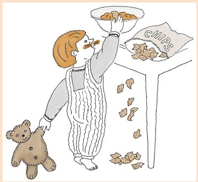
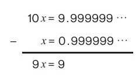
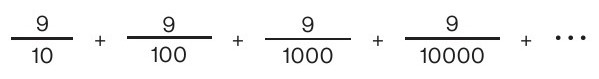
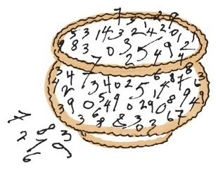

什么？数学里居然包含“本土化材料”！对此我想不出什么。在我们这个星球上，数学的元素没有什么地点和位置，它们存在于我们的思维中。这可以说是美食和数学之间不同的主要特征之一。
我们选用本地的食材有两个原因，其一是成分新鲜，做出的菜肴会更好吃。另一个原因是如果食物不是经过万里跋涉运输过来，那么菜肴制作的准备工作受到环境的影响要小得多。但是当然，数学不会遭遇这类问题。
其实，数学是完全绿色环保的。我们从未扔掉一个数字。我们持续重复使用数字。我很高兴地说，数学，完全是可持续的。
有配料的食材
如果你不用当地的食材，那么你做的菜会多出一步，要去除它的原产地特征。你用有配料的食材时同样如此。举例来说，某个食谱可能需要一大汤匙番茄酱。但是，什么是“番茄酱”？依据生产商来看，它可能包含红色成熟番茄的番茄浓缩汁、蒸馏醋、高果糖玉米糖浆、玉米糖浆、盐、香料、洋葱粉和天然风味物质[30]。你会自己做这道菜还是叫外卖？
大部分厨师不会介意使用有配料的食材。虽然他们可能会选择一个品牌的番茄酱而不要另一个品牌的番茄酱，但是他们总会用番茄酱。做高端菜肴的主厨可能会进行分类，从番茄酱中提取出他/她真正想要的东西，然后从基本配料中获取。
我不是做高档菜肴的主厨。但是我也会为有配料的食材而困扰。我有时会自己做一些食材，这样我就不必用外卖商品。我曾经做过番茄酱（《欢乐烹饪》节目中介绍的方法）[31]。
我通常会自己做一些红糖（将白糖和糖蜜混在一起即可）。因为一度依赖于伪汉堡食谱中的葡萄果仁麦片，饱受困扰后我自己设计了一个葡萄果仁麦片的制作方法。
但是随后，我就想要知道：为什么我会因为有配料的食材而烦恼？
用证据证明
于是我有了答案。假如我正在阅读一篇数学论文，在论文中我看到了一个定理的证明。如果证明用的是另一个结果，即其他论文的命题时，我就觉得心神不安。我觉得自己没有真正理解定理的证明，直到我读完并理解了较早前命题的证明。作为数理逻辑学家我对这一点体会特别强烈。
数理逻辑是我第一个认真研究的领域。逻辑与数学基础有关。我们从几个数学原理开始，再从这些原理构建出宏伟的数学大厦。这是欧几里得在2400年前做的事情，也是20世纪逻辑再次研究的内容。
我所接受的教育是寻找基本原理，在数学基本原理上深入自己的研究。并不是每一位数学家都这么想，而事实上是，大多数都不会这么想。如果所有事物都必须从基本原理出发、完成，那我们就不会取得如此多的进步。可能对于美食学和数学来说这是另一种美。我相信这种美在这两个学科中都存在，没有什么可惊讶的。
使用隐藏食材的食谱
大部分厨师用组合食材都很顺手。这也是一种风格。其实在我小时候，用工业产品进行烹饪的情况还是很多的：用玉米片做的饼干，用罐装蘑菇汤做的砂锅菜，用瓶装意大利面酱做的烘肉卷等。
我最爱的简餐是花蛤浸，可能是卡夫食品公司研发的产品。我妈妈聚会待客时做了。某个聚会后的第二天早上，我的兄弟们和我会就着油炸玉米饼，抢着吃剩下的花蛤浸。我当时就爱上了。
我最近会上网寻找制作方法。我找到很多，但是没有哪个和我记忆中的味道相符——一罐头切碎的花蛤，2包带香葱的奶油干酪，还有一些伍斯特郡酱。我再也找不到带香葱的3盎司包装的奶油干酪了。我找到这种有香葱和洋葱的奶油干酪是糊状的，可能干酪的含量少而水分多。有了这些，下面这个制作方法就与我记忆中的味道相近了。
花蛤浸

180克罐装碎花蛤
170克奶油干酪
1½茶匙香葱末
保留罐头中的液体，将剩下的食材混合在一起，加入足量的罐头中的液体使所有食材都能浸泡在其中。冷藏。吃时配上独创的油炸玉米饼，味道很正。
存在隐藏证据的证明
不是只有逻辑学家会被有证据的证明所困扰。当大多数学生的老师（带着一种混杂着骄傲和担心的复杂情绪）告诉他们无穷小数
0.999999 ……
等于1时，他们也会经历一段这样的困扰时光。大部分学生没有放弃，这是一场战争。老师是胜利一方，但是这种胜利是空洞的，因为在他们心里，学生并没有信服。对此的证明过程一般是这样的：
好的，我们现在有这样一个小数，是什么呢？我们将未知数称为x。
x=0. 999999……
现在我们将等式的两边都乘以10。等式右边只是移动了小数点。
10x=9. 999999……
现在我们有两个等式，所以我们可以相减：

很好！如果9x等于9，那么x只有一个可能的值：
x=1
这个胜利是空洞的，因为这个不可思议的证明说服不了任何人，甚至可能连老师们都不信。
学生们在想：“无论你证明多久，0.999999……就是小于1。永远都会有一点点差！”
这也是一道证明题，证明0.999999……不等于1。问题是学们没有将0.999999……看成是一个完整的数。他们将它看成一个运动对象。它不是一个无穷小数，而是一个正在变得越来越长的有限小数。有限小数永远不是1，因此0.999999……不等于1。
因为对象0.999999……是无穷和。

所以此处缺失的是无穷和的归整原理。
没有这个原理，第一个证明就毫无意义。说“x=0.999999……”是假定0.999999……代表一个单一的、无变化的量。为什么它应该代表一个量呢？
其背后隐藏的原理并不简单。它清楚地说明人类用了2000多年才得出细节！
最后，完全取决于你是哪一种数学家/厨师。我想我两种都是。有时我向往基本原理。我会从空集开始，创造出数字手工集。我也会自己制作酸奶油、酒醋、红糖、番茄酱、芥末和蛋黄酱。
而在其他时候，我会做一回花蛤浸，从架子上拿下一个无穷小数，然后冷藏。
